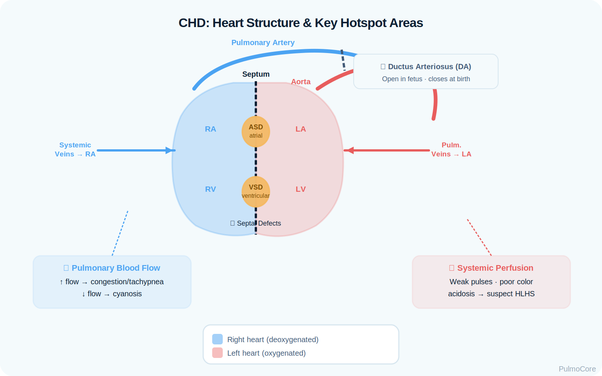
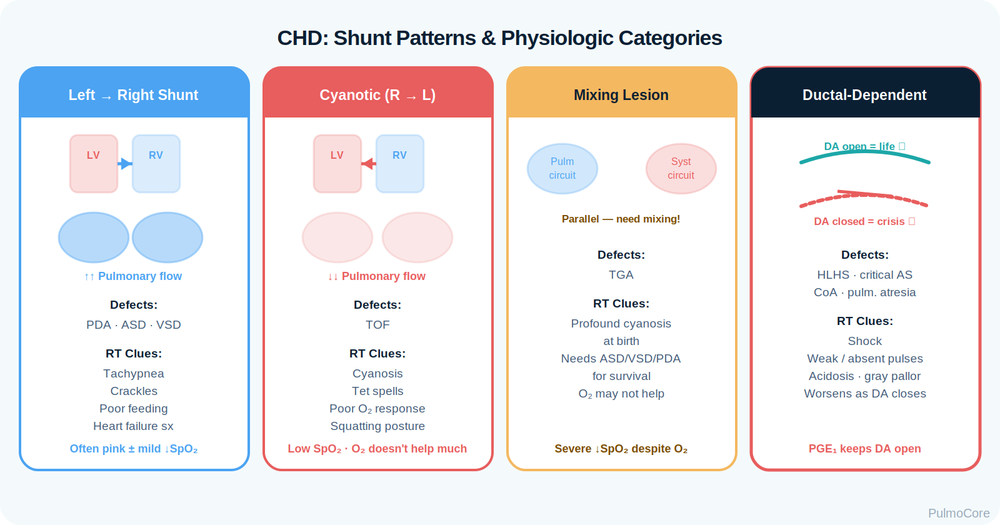
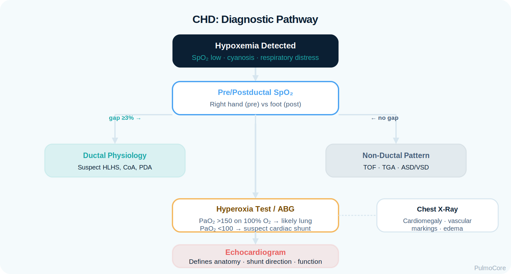

Congenital heart diseases can present as respiratory distress because abnormal cardiac anatomy changes pulmonary blood flow, systemic perfusion, and oxygen delivery. This module focuses on PDA, ASD, VSD, TOF, TGA, and HLHS with RT-level assessment, oxygenation interpretation, red flags, diagnostics, and escalation priorities.
Category Pediatric/Cardiopulmonary Disorders
Estimated Time 35–45 minutes
Level Core RT Knowledge
Learning Objectives
By the end of this module, learners should connect cardiac anatomy, shunt direction, pulmonary blood flow, oxygenation patterns, respiratory symptoms, diagnostics, and escalation logic for common congenital heart diseases.
2. Interpret respiratory presentation Explain why cardiac defects cause tachypnea, retractions, crackles, cyanosis, or poor feeding.
3. Use diagnostic clues Use pre/postductal SpO₂, ABG, CXR, echocardiography, murmurs, perfusion signs, and response to oxygen.
4. Escalate safely Recognize ductal-dependent shock, severe cyanosis, apnea with prostaglandin, and signs of heart failure.
Video Overview
2-Minute Congenital Heart Disease Overview
Watch this quick overview before moving into the disease snapshot.
Disease Snapshot
Congenital heart disease is not one disease. For RT board-style reasoning, first decide whether the lesion causes too much pulmonary blood flow, too little pulmonary blood flow, poor systemic blood flow, or inadequate mixing between circulations.
PDA: Persistent ductus arteriosus; often left-to-right after birth causing pulmonary overcirculation.
ASD: Atrial-level left-to-right shunt, often subtle early but can increase pulmonary blood flow.
VSD: Ventricular-level shunt; large defects can cause heart failure and pulmonary edema.
TOF: Cyanotic lesion with decreased pulmonary blood flow and hypercyanotic spells.
TGA: Parallel circulations; survival depends on mixing through ASD, VSD, or PDA.
HLHS: Ductal-dependent systemic blood flow; balance of pulmonary and systemic flow is critical.
RT Clinical Connection
A newborn with tachypnea is not always a lung problem. If oxygen saturation remains low despite oxygen, or if respiratory distress is paired with poor pulses, gray color, hepatomegaly, feeding intolerance, or differential saturations, the RT should think cardiopulmonary physiology and escalate.
Board Prep Frame
Associate left-to-right shunts with pulmonary overcirculation and heart failure signs. Associate right-to-left or mixing lesions with cyanosis that may not fully correct with oxygen. Associate ductal-dependent lesions with deterioration when the ductus closes.
Quick Pre-Check
Start with the core CHD pattern
Which statement best describes why congenital heart disease may look like respiratory disease?
Anatomy & Pathophysiology
Normal transition after birth requires falling pulmonary vascular resistance, rising systemic vascular resistance, and closure of fetal shunts. Congenital defects disrupt this transition by allowing abnormal shunting, limiting blood flow, or requiring fetal pathways to remain open.
Cyanosis, decreased pulmonary blood flow, limited response to oxygen.
Mixing lesion
TGA
Profound cyanosis unless adequate mixing exists through ASD/VSD/PDA.
Ductal-dependent systemic flow
HLHS
Shock, weak pulses, acidosis when ductus constricts; oxygen must be used thoughtfully.
Danger Sign
Severe hypoxemia that does not improve as expected with oxygen should trigger concern for cardiac shunting or mixing physiology rather than isolated lung disease.
Click the CHD Hotspots
Click each hotspot to reveal how a key structure affects oxygenation and RT decisions.

Start here: Click all four hotspots to complete this activity.
0 / 4 hotspots reviewed
Defect Patterns: PDA, ASD, VSD, TOF, TGA, HLHS
Instead of memorizing every defect separately, classify each condition by its dominant physiologic problem. This makes oxygen, ventilation, and escalation decisions safer.

Visual focus: shunt direction and whether the lungs receive too much flow, too little flow, or mixed blood.
Defect
Core Problem
Common RT Clues
PDA
Persistent aorta-to-pulmonary artery connection
Bounding pulses, murmur, tachypnea, pulmonary edema if large.
ASD
Atrial-level left-to-right shunt
Often mild early; recurrent respiratory symptoms or exercise intolerance later.
VSD
Ventricular-level left-to-right shunt
Tachypnea, poor feeding, diaphoresis, pulmonary congestion if large.
TOF
RV outflow obstruction with VSD and right-to-left shunting
Choose the best category for each finding, then check your answers.
Large VSD with pulmonary congestion
Tetralogy of Fallot spell
Large PDA after pulmonary vascular resistance falls
HLHS with closing ductus and weak pulses
Persistent cyanosis from right-to-left shunting
Complete the sorting activity to continue.
Clinical Manifestations
Congenital heart disease may appear as respiratory distress, feeding difficulty, cyanosis, or shock. RT assessment must separate primary lung disease from oxygen delivery and blood flow problems.
Finding Type
What the RT May See
Respiratory
Tachypnea, retractions, grunting, crackles, increased oxygen need, recurrent infections.
Oxygenation
Cyanosis, low SpO₂, pre/postductal saturation differences, limited response to oxygen.
Poor feeding, diaphoresis with feeds, failure to thrive, fatigue.
Cardiac clues
Murmur, gallop, hepatomegaly, cardiomegaly, pulmonary vascular markings on CXR.
Important Teaching Point
Do not assume every tachypneic infant needs only more oxygen or bronchodilators. Tachypnea with poor feeding, hepatomegaly, pulmonary edema, or weak pulses may be cardiac.
Diagnostics & Assessment
Diagnostic data should clarify whether the problem is oxygenation, ventilation, pulmonary blood flow, systemic perfusion, or cardiac anatomy.
High-Yield Tests
Test
What It Helps Determine
Preductal and postductal SpO₂
Detects differential oxygenation and possible ductal physiology.
ABG/VBG and lactate
Assesses oxygenation, ventilation, acid-base status, and shock.
Chest x-ray
Identifies cardiomegaly, pulmonary edema, vascular markings, or alternate lung disease.
Echocardiogram
Defines anatomy, shunt direction, ventricular function, and ductal flow.
ECG
May show chamber enlargement, axis changes, or rhythm concerns.
Four-extremity blood pressures
Can support evaluation of systemic flow obstruction or perfusion differences.
Oxygen Response Pattern
Hypoxemia from lung disease often improves meaningfully with oxygen. Hypoxemia from right-to-left shunt, poor mixing, or low pulmonary blood flow may show limited improvement because blood bypasses ventilated alveoli or cannot reach the lungs effectively.

Visual focus: diagnostic pathway from bedside oxygenation clues to echocardiography.
Oxygenation, Shunts & Bedside Interpretation
Oxygen saturation numbers must be interpreted in context. Some CHD patients have expected target saturations below normal, while others require urgent intervention for profound cyanosis or shock.
Left-to-right shunt Often not cyanotic early; problem is too much pulmonary blood flow.
Right-to-left shunt Cyanosis may persist because blood bypasses the lungs.
Ductal-dependent flow Deterioration can occur quickly as the ductus closes.
Oxygen Response Activity
A newborn remains cyanotic with SpO₂ 72% despite appropriate oxygen delivery and good chest movement. Which interpretation is most concerning?
Severity & Red Flags
The highest-risk CHD presentations involve persistent cyanosis, shock, worsening acidosis, apnea, or signs that pulmonary and systemic blood flow are out of balance.
Red Flag
Why It Matters
SpO₂ remains very low despite oxygen
Suggests shunt, poor mixing, or low pulmonary blood flow.
Weak pulses, gray color, poor perfusion
May indicate ductal-dependent systemic flow or shock.
Metabolic acidosis or rising lactate
Signals inadequate oxygen delivery and perfusion.
Apnea after prostaglandin E1
Known risk; RT must be ready to support ventilation.
Sudden cyanotic spell in TOF
Can rapidly reduce pulmonary blood flow.
Tachypnea with poor feeding and hepatomegaly
Suggests heart failure from pulmonary overcirculation.
Management & Treatment
RT management is supportive and diagnostic: optimize airway and ventilation, apply oxygen appropriately, monitor response, identify shunt/perfusion patterns, and escalate rapidly. Definitive treatment is medical, catheter-based, or surgical depending on the lesion.
Management Logic
Problem
Likely Support
RT Emphasis
Pulmonary overcirculation
Diuretics, nutrition support, possible surgery/cath closure.
Maintain mixing; possible balloon atrial septostomy and surgery.
Persistent cyanosis despite oxygen is a key clue.
Critical CHD Escalation Sequence
Select the steps in the best general order for a newborn with severe cyanosis and suspected ductal-dependent or mixing lesion.
Assess airway, breathing, circulation, and pre/postductal SpO₂
Provide appropriate oxygen and ventilatory support
Notify neonatal/cardiology team urgently
Prepare for prostaglandin E1 if ductal-dependent lesion suspected
Monitor for apnea and support ventilation
Confirm anatomy with echocardiography and plan definitive intervention
Complete the sequence activity to continue.
Critical Lesions & Escalation
Critical congenital heart disease can deteriorate quickly when ductal flow decreases or when pulmonary/systemic blood flow becomes unbalanced. RTs must anticipate decompensation rather than waiting for classic lung failure signs.
PGE1 concept: Keeps the ductus open but can cause apnea; ventilation support may be needed.
Oxygen concept: Use as ordered and needed, but recognize oxygen may alter pulmonary/systemic flow balance in some single-ventricle lesions.
Board Pearl
For HLHS and other ductal-dependent systemic lesions, think “ductus equals systemic perfusion.” A gray, acidotic infant with weak pulses after the ductus starts closing needs urgent prostaglandin/cardiac escalation, not routine respiratory treatment alone.
Respiratory Therapist Role
The RT helps identify when respiratory distress is actually cardiopulmonary blood flow failure. Priorities include oxygen delivery, ventilatory support, SpO₂ interpretation, ABG/lactate trend awareness, response monitoring, and communication of red flags.
RT Task
What to Assess or Do
Why It Matters
Assess oxygenation
Preductal/postductal SpO₂, cyanosis, response to oxygen.
Identifies shunt or ductal physiology clues.
Assess ventilation
RR, WOB, ABG PaCO₂, apnea risk.
Supports safe escalation and PGE1 monitoring.
Assess perfusion clues
Pulses, color, cap refill, lactate/acidosis trends.
Explain oxygen/monitoring devices and why feeding may worsen symptoms.
Supports calm, safe care during stressful events.
Guided Unfolding Case Study
The Blue Newborn Who Is Breathing Well
This guided case reveals one clinical stage at a time. Learners make an RT decision, receive feedback, and then continue to the next stage.
Stage 1: Initial Presentation
A 4-hour-old newborn is cyanotic. Chest rise is symmetric, breath sounds are clear, and SpO₂ remains 74% despite oxygen.
RR 58/min
SpO₂ 74% with O₂
Breath Sounds Clear bilaterally
Decision Question: What should the RT suspect?
Stage 2: Bedside Data
Right hand SpO₂ is 76% and foot SpO₂ is 70%. Pulses are present. The team suspects a ductal or mixing lesion.
Decision Question: Which diagnostic test is most definitive for identifying the cardiac anatomy?
Stage 3: Ductal Dependence
The infant becomes gray with weaker pulses and worsening metabolic acidosis. A ductal-dependent lesion is suspected and prostaglandin E1 is started.
Decision Question: What RT complication should be anticipated after prostaglandin E1?
Stage 4: Decision-Based Scenario
Another infant with a large VSD has tachypnea, poor feeding, crackles, and cardiomegaly on CXR.
Decision Question: What is the best interpretation?
Case Wrap-Up
RT Takeaway: Persistent cyanosis with good ventilation suggests shunt or mixing physiology. Tachypnea with crackles, poor feeding, and cardiomegaly suggests pulmonary overcirculation/heart failure.
If the patient worsens: weak pulses, gray color, acidosis, apnea, or refractory cyanosis require urgent escalation.
Knowledge Check
Board-Style Practice
Answer each question to complete this activity. Answer choices shuffle each time the lesson opens.
Question 1
Which group of defects most commonly produces pulmonary overcirculation from left-to-right shunting?
Question 2
A newborn remains cyanotic despite oxygen and has clear breath sounds. Which diagnosis should be considered?
Question 3
Which medication is used to maintain ductal patency in suspected ductal-dependent congenital heart disease?
Question 4
What respiratory complication must the RT anticipate after prostaglandin E1 is started?
0 / 4 questions answered
FAQ
Common CHD Questions
Why can heart defects look like respiratory disease?
Abnormal heart anatomy can increase pulmonary blood flow, decrease pulmonary blood flow, impair mixing, or reduce systemic perfusion. All of these can create tachypnea, cyanosis, or distress.
Which defects are left-to-right shunts?
PDA, ASD, and VSD commonly create left-to-right shunting after birth, increasing pulmonary blood flow.
Why might oxygen not fix cyanosis?
If blood bypasses the lungs or circulations do not mix appropriately, oxygen may not fully correct saturation even when ventilation is adequate.
What makes HLHS dangerous?
The left heart cannot support systemic circulation effectively, so systemic blood flow depends on the ductus arteriosus remaining open.
Why does PGE1 matter to RTs?
PGE1 maintains ductal patency but can cause apnea, so RTs must be prepared to support ventilation.
What are tet spells?
Hypercyanotic spells associated with Tetralogy of Fallot involve sudden worsening cyanosis from reduced pulmonary blood flow and require urgent intervention.
What test confirms the anatomy?
Echocardiography is the key test for defining cardiac anatomy, shunt direction, ventricular function, and ductal flow.
Summary & Clinical Pearls
Congenital heart disease can present with respiratory distress because circulation determines oxygen delivery. RTs should classify the physiology, assess oxygenation and ventilation, recognize red flags, and escalate when cyanosis or perfusion does not fit a primary lung problem.
Must know: PDA, ASD, and VSD often cause left-to-right shunting and pulmonary overcirculation.